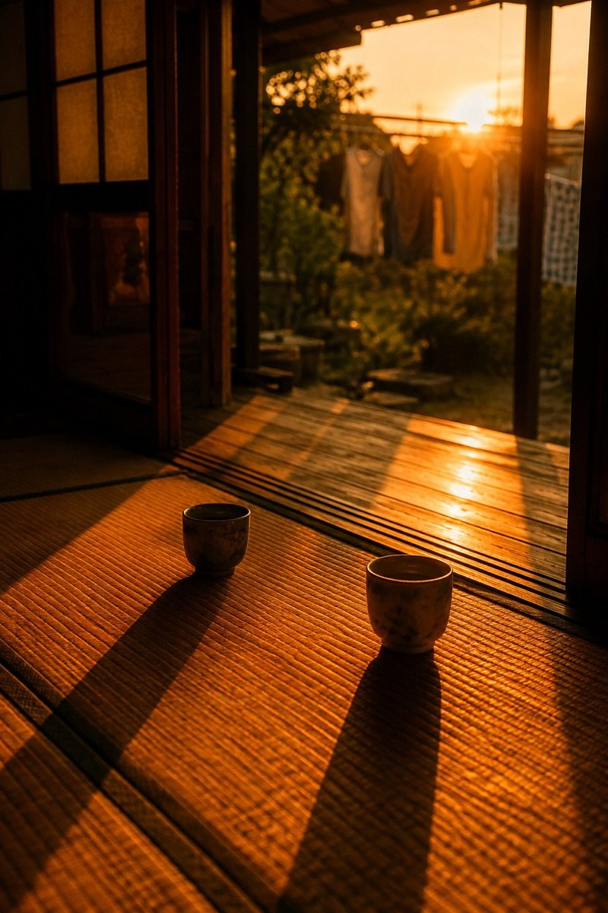

A letter for today
What were you writing, this day last year?
——Do you remember?
From the you of another day, one a day.
Open
Home for the first time in a while. Tea with my mother on the veranda. We weren't talking about anything in particular, and still, we both laughed about when to bring the laundry in. It was only that kind of evening, but I think it was enough. From you, a year ago
today
place
sky
halfway
The words you left that day come back with nothing summarised and nothing rephrased, in the way you actually speak. So as you read, you hear your own voice.
Each letter lasts only its day. Rather than piling them up and counting them, we would like today's letter read today. On the days you wrote a diary, you were, without knowing it, writing a letter to a future you.
The details
- The way in is the envelope at the right of the date row on the home screen. While a letter is unread, an envelope also sits under “Today”. It opens the letter desk: one letter every evening at ten, replaced by the next at ten the following evening.
- A letter from a day where the talking stopped carries “Pick up the conversation”, and takes you straight back into it, within the limits of conversation on your plan (on the free plan, five exchanges per photo).
- Letters begin once you have three chapters or so. Until then, Scia's first letter sits on the desk.
- The letters themselves need no plan.
A letter for the month
What kind of month was last month?
——Could you say, in a word?
From Scia, one a month.
Everything you said about your photos over the month, everything you wrote down: Scia remembers it, as the friend who was sitting beside you, listening. Now that the month has turned, Scia thinks back and speaks to you. A day you had forgotten comes back in a person's voice.
The days scatter as soon as they pass. Only when someone gathers them up and hands them back in a single line can you think, “so that is the month it was.”
The details
- The way in is the envelope at the right of the “Looking back” heading on the home screen. It stays there all month. For the first seven days of the month a “Last month in review” card appears as well, and the notification opens it too.
- The paper is the same as a letter on the desk. At first only the opening paragraph shows; See the letter, or a tap on the paper, opens it full screen. There, the photos you kept coming back to last month sit in a row, and a tap lifts one up large over the paper.
- Listen reads it in Scia's voice, chosen separately from the story and guidance voices under “Pick the reading voice” in Settings. The pulse of the voice reaches your fingers with cloud voices, such as the multilingual voice.
- On the same page: the row of photos, and one from the same month a year ago. “Bind these into a book” makes a book, and the letter stays on its cover as the foreword.
- With a paid plan it arrives every month. On the free plan, for the first three months. The notification comes once, at the start of the month.
Two tones for the description
You want to tell them, and the words will not come.
——Has that ever happened to you?
Polite, or friendly. You choose the tone of the description written into each photo.

I want to tell a Japanese friend, or my own child, what I am looking at and what I feel about it. But the words will not come. If I could take a photo and have a description written, I could simply show it, or read it aloud. And it would be Japanese practice for me. Someone from abroad, living in Japan. Friendly was born here
The description written into each photo has only ever used polite, formal Japanese. From the next update you can choose Friendly: the spoken Japanese of a teacher talking to young children. If you change nothing, it stays as it is.
The details
- Switch it from the “Description” pill on the camera screen. Below the length (brief, standard, detailed) sit the two tones (polite, friendly). The Description row of the style sheet offers the same choice.
- A friendly description can have a voice of its own. When the description voice is an AI voice, “Friendly description voice” appears under “Description voice” in Settings.
- The tone applies only to the description written into the photo. Diaries and stories do not change. Descriptions are written in Japanese.